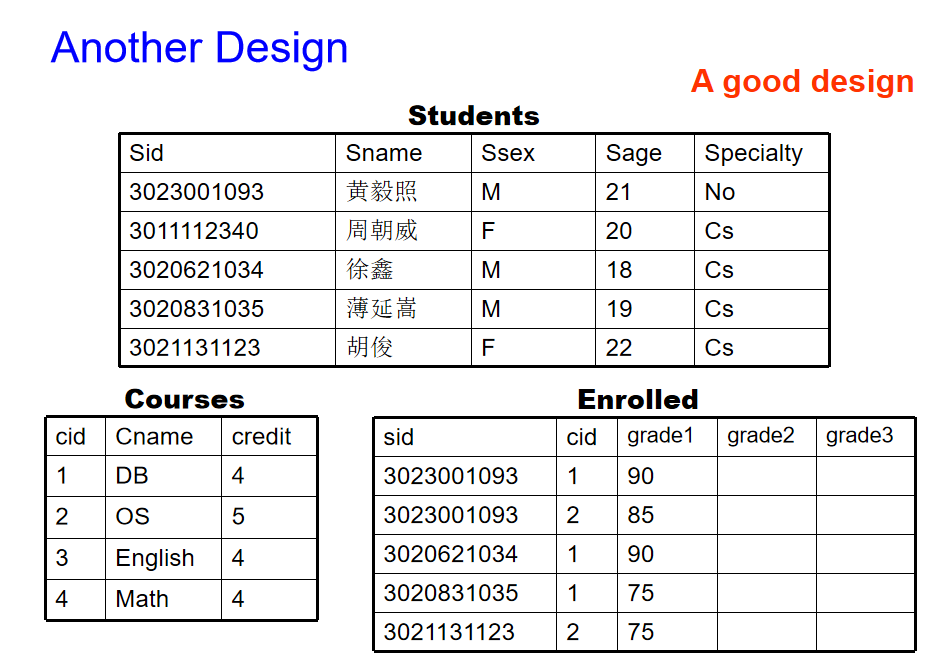

Lesson1
Introduction
Purpose of using database
Database Management System (DBMS)是用于存储、管理、访问数据库的软件系统。
数据库的建模和设计从现实世界中获取/抽象数据模型，然后将其转换为适合目标数据库管理系统（DBMS）的形式——表、视图。

数据库访问方法:
- 使用DBMS提供的交互工具（如SQL Server的Query Analyzer， ORACLE的SQL *Plus和Work Sheet等）访问数据库。
- 使用开发工具（如vc++、PB、Delphi、ASP、JSP、PHP等）调用ODBC/JDBC访问数据库。
数据库是什么？ ---- 长期存储在计算机内、有组织的、可共享的数据集合。
数据库管理系统（DBMS）其实就是数据库加上一组用于访问、更新和管理数据库中的数据的程序。
数据库管理系统的特点：
- 数据访问的效率和可扩展性
- 减少应用程序开发时间
- 数据独立性（包括物理数据独立性和逻辑数据独立性）
- 数据完整性和安全性
- 并发访问和健壮性（恢复）
数据库中，数据文件是相互独立的。
文件处理系统的缺点：
- 数据冗余与文件不一致
- 数据访问困难
- 数据独立性导致多个文件和多种格式难以检索，难以共享
- 诚信问题(啊？)
- ...
开源的数据库：MySQL、PostreSQL、OpenGauss、PolarDB...
View of Data
Level of Data Abstraction
如何使用数据库: 不同的用法需要不同的抽象层次。
- 物理层：描述记录的存储方式
- 逻辑层：描述数据库中存储的数据，以及上层数据之间的关系。
- 隐藏复杂性
-
增强对于变化的适应能力
-
Schema（模式）：数据库在不同层次上的结构，类似于程序中变量的类型信息。
- Physical schema（物理模式）：数据库在物理层次上的结构设计(描述数据是如何在存储介质（如硬盘）上存储的。它关注的是数据的存储结构和优化方式，类似于程序中如何分配内存给变量)。
- Logical schema（逻辑模式）：数据库在逻辑层次上的结构设计（描述数据是如何在存储介质（如硬盘）上存储的。它关注的是数据的存储结构和优化方式，类似于程序中如何分配内存给变量。）。
- Subschema（子模式）：视图层次上的模式(指的是可能对于特定的用户，他并不关心数据库全局，而只是关心一部分)。
-
Instance（实例）：数据库在某一时刻的具体数据状态，类似于程序中变量的值。就像变量在程序运行过程中存储的具体值会变化一样，数据库中的实例数据也会随着时间的推移发生变化。
- 类似于编程语言中的类型与变量的关系：类型 ↔ 模式，变量 ↔ 实例。
数据模型是描述数据结构、数据关系、数据语义和数据约束的概念工具集合。 不同层次的数据抽象需要不同的数据模型来描述。 常见的数据模型有：
- 实体-关系模型（Entity-Relationship model）：一种常用的用于描述数据结构和关系的模型，强调实体及其之间的关系。ER模型使用图形化的符号（如实体、属性和关系）来表示数据库的逻辑结构。
- 关系模型（Relational model）：将数据表示为由行和列组成的表格（即关系），并使用SQL（结构化查询语言）来操作数据。关系模型的核心概念是关系、元组、属性等。
- 其他模型：
- 面向对象模型（Object-oriented model）
- 半结构化数据模型（如XML）
- 旧的模型，如网络模型（Network model）、层次模型（Hierarchical model）等。
Database Language
DDL + DCL + DML = SQL
Database Design
Step of Database Designs
- 需求分析
- 概念层的设计：E-R模型
- 逻辑层面的设计：关系模型(表结构)
- 模式改进
- 物理层的设计：物理存储结构(内存、处理器...)
讨论了一下ER模型，就是把对象和对应属性连接起来。
Database Users and Administrator
Database Users
- 初学者用户（Naive users）——调用以前用高级语言编写的永久性应用程序。例如，通过网络访问数据库的用户、银行出纳员、文员等。
- 应用程序员（Application programmers）——通过SQL调用与系统进行交互。
- 高级用户（Sophisticated users）——使用数据库查询语言来形成请求。例如，在线分析处理（OLAP）、数据挖掘等。
- 专用用户（Specialized users）——编写不符合传统数据处理框架的专用数据库应用程序。例如，计算机辅助设计（CAD）、专家系统（ES）、KDB等。
后三者称为专业用户(professional users)。
一般的用户通过间接方式(调用高级语言编写的program)来与数据库交互，advanced users通过SQL语言查询即可直接交互。
数据库管理员（DBA）：一种特殊的用户，拥有对数据库及访问这些数据的程序的中央控制权限。
- DBA拥有数据库的最高权限。
- DBA协调数据库系统的所有活动。
- DBA控制所有用户对数据库的访问权限。
- DBA对企业的信息资源和需求有深入的了解。
数据库管理员的职责/功能包括：
- 架构定义
- 存储结构和访问方法定义
- 架构和物理组织的修改
- 授权数据访问权限
- 路由维护
- 监控性能并响应需求变化
- 数据库安全性（例如，定期备份数据库，发生故障时进行恢复）
Transaction Management
- 一个事务(transaction)是执行数据库应用程序中单一逻辑功能的一组操作。
- 事务的要求包括原子性(atomicity)、一致性(consistence)、隔离性(isolation)和持久性(durability)。
- 原子性：指事务包含的所有操作要么全部成功，要么全部失败回滚，因此事务的操作如果成功就必须要完全应用到数据库，如果操作失败则不能对数据库有任何影响。
- 一致性：事务开始前和结束后，数据库的完整性约束没有被破坏。比如A向B转账，不可能A扣了钱，B却没收到。
- 隔离性：当多个用户并发访问数据库时，比如操作同一张表时，数据库为每一个用户开启的事务，不能被其他事务的操作所干扰，多个并发事务之间要相互隔离。同一时间，只允许一个事务请求同一数据，不同的事务之间彼此没有任何干扰。比如A正在从一张银行卡中取钱，在A取钱的过程结束前，B不能向这张卡转账。
- 持久性：一个事务一旦被提交了，那么对数据库中的数据的改变就是永久性的，即便是在数据库系统遇到故障的情况下也不会丢失提交事务的操作。
- 事务管理组件(Transaction-management component )确保数据库在系统故障（例如，电源故障和操作系统崩溃）和事务失败的情况下仍然保持一致（或正确）的状态。
- 并发控制管理器(Concurrency-control manager)控制并发事务之间的交互。
Database Architecture
Storage manager
存储管理器是一个程序模块，提供数据库中存储的低级数据与提交给系统的应用程序和查询之间的接口。存储管理器负责以下任务：1. 与文件管理器的交互； 2. 高效地存储、检索和更新数据
存储管理器包括：
- 事务管理器
- 授权和完整性管理器(Authorization and integrity manger)
- 文件管理器（与文件系统交互以处理数据文件、数据字典和索引文件）
- 缓冲区管理器
Query Processor
查询处理器包括DDL解释器、DML编译器和查询处理。
查询处理如下：
Query Processing Optimization
评估给定查询的替代方法：
- 等价表达式
- 每个操作的不同算法
Database System Internals
在这里给出这张图就容易理解多了。
底层计算机系统影响数据库系统架构：
- 集中式(Centralized)
- 客户端-服务器
- 并行（多处理器）(Parallel(multi-processor))
- 分布式 (Distributed)